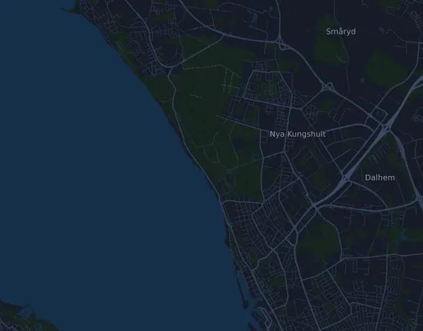

Helsingborg Half Marathon 21 km
- Distance
- 21,1 km
- Højdemeter
- ↑ 103 m
- Højeste punkt
- 52 m o.h.
- Underlag
- Vej
- Karakter
- Flad
- Start
- kl. 09:30
- Væskedepoter
- 6
Højdeprofil
Forbered dig med Mila
Mila er en løbecoach i en app. Lægger du et løb ind i din plan, planlægger coachen ugerne frem til start efter din form og giver dig en tidsprognose og en plan for tempo, væske og energi på ruten.

Den rette træning. Den rette dag.
Ruten

Om ruten
HOKA Helsingborg Half Marathon er et vejløb på 21,1 km i Helsingborg, Sverige. Ruten har 103 højdemeter stigning og 107 højdemeter fald, 4,9 m pr. km, og regnes dermed som flad. Det højeste punkt ligger 52 m o.h. og det laveste 1 m o.h.
Den største stigning begynder ved km 0,0: 36 højdemeter på 2,9 km med 1,2 % i snit, op til 40 m o.h.
Arrangøren har 6 væskedepoter langs ruten, det første ved km 2,4 og det sidste ved km 18,8.
I Mila-appen beskriver coachen ruten i detaljer på dit sprog og planlægger dit tempo og din energi til den.
Stigninger
| Begynder ved | Længde | Højdemeter | Hældning | Top (m o.h.) |
|---|---|---|---|---|
| km 0,0 | 2,9 km | 36 m | 1,2 % | 40 |
Før start
Væskedepoter
| Ved | Her er |
|---|---|
| km 2,4 | vand, sportsdrik, mad |
| km 4,7 | vand, sportsdrik |
| km 8,9 | vand, sportsdrik, mad, salt |
| km 11,3 | vand, sportsdrik |
| km 15,8 | vand, sportsdrik, mad |
| km 18,8 | vand, sportsdrik, mad |
Starttider
- kl. 09:30
Kilde: helsingborgmarathon.se, hentet 25. november 2026
Tempotabel
Helsingborg Half Marathon 21 km på 1:30:00 – tid pr. km og mellemtider
4:16 pr. km · km 5: 21:20 · km 10: 42:39 · km 15: 1:03:59 · mål: 1:30:00
Helsingborg Half Marathon 21 km på 1:45:00 – tid pr. km og mellemtider
4:59 pr. km · km 5: 24:53 · km 10: 49:46 · km 15: 1:14:39 · mål: 1:45:00
Helsingborg Half Marathon 21 km på 2:00:00 – tid pr. km og mellemtider
5:41 pr. km · km 5: 28:26 · km 10: 56:52 · km 15: 1:25:18 · mål: 2:00:00
Helsingborg Half Marathon 21 km på 2:15:00 – tid pr. km og mellemtider
6:24 pr. km · km 5: 31:59 · km 10: 1:03:59 · km 15: 1:35:58 · mål: 2:15:00
Tiderne forudsætter et jævnt tempo hele vejen. Det er ren regning, ingen prognose: på stigninger, i trængsel og ved væskedepoter svinger tempoet.
Ofte stillede spørgsmål
Hvornår løbes Helsingborg Half Marathon 21 km?
Helsingborg Half Marathon 21 km løbes lørdag den 4. september 2027. Tjek dato og starttid hos arrangøren.
Hvornår starter Helsingborg Half Marathon 21 km?
Ifølge arrangøren: kl. 09:30.
Hvor langt er Helsingborg Half Marathon 21 km, og hvor mange højdemeter er der?
Løbet er 21,1 km langt med 103 højdemeter stigning og 107 højdemeter fald. Det højeste punkt ligger 52 m o.h.
Hvordan er ruten på Helsingborg Half Marathon 21 km?
Ruten regnes som flad, med 4,9 højdemeter pr. km i snit. Den har én stigning på mindst 25 højdemeter, ved km 0,0: 36 højdemeter på 2,9 km. Ruten går fra start til et mål et andet sted. Underlaget er vej.
Er der væskedepoter på Helsingborg Half Marathon 21 km?
Ja. Arrangøren har 6 væskedepoter: km 2,4 (vand, sportsdrik, mad); km 4,7 (vand, sportsdrik); km 8,9 (vand, sportsdrik, mad, salt); km 11,3 (vand, sportsdrik); km 15,8 (vand, sportsdrik, mad); km 18,8 (vand, sportsdrik, mad).
Hvordan fordeler jeg farten på Helsingborg Half Marathon 21 km?
Gå efter en jævn indsats hele vejen, og hold igen de første kilometer, når benene føles friske, og feltet trækker fra. Ruten er flad, så et jævnt tempo pr. kilometer fungerer godt. I Mila får du en tempoplan til netop denne rute efter din egen form.
Flere løb som dette
Flere løb i nærheden
- Helsingborg Marathon 42,2 km4. september 2027 · Helsingborg, Sverige
- Jönköping Half Marathon 21 km28. august 2027 · Jönköping, Sverige
- Jönköping Marathon 42,2 km28. august 2027 · Jönköping, Sverige
- Midnattsloppet Malmö 10 km28. august 2027 · Malmö, Sverige
- Midnattsloppet Malmö 5 km28. august 2027 · Malmö, Sverige
- Stockholm Halvmaraton 21 km21. august 2027 · Stockholm, Sverige
Forbered dig med Mila
Den rette træning. Den rette dag.
Oplysningerne kommer fra rutefilen og arrangørens information. Tjek dato, starttider og regler hos arrangøren.
Mila er ikke tilknyttet, sponsoreret af eller godkendt af arrangøren eller løbets sponsorer. Navne og varemærker tilhører deres ejere. Arrangør eller rettighedshaver? Bed om ændring eller fjernelse